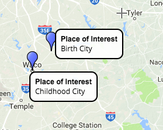

For semester 2 for history we've been
For coding the past in daramola’s class we learned from and older person where their family and they have been,how to code a transcript, and we had to make a map With this website called Scribble Maps
Audio
interview audio
Map

Here is my work in Daramola’s class. We learned for our latest project we did this
Interview transcript.